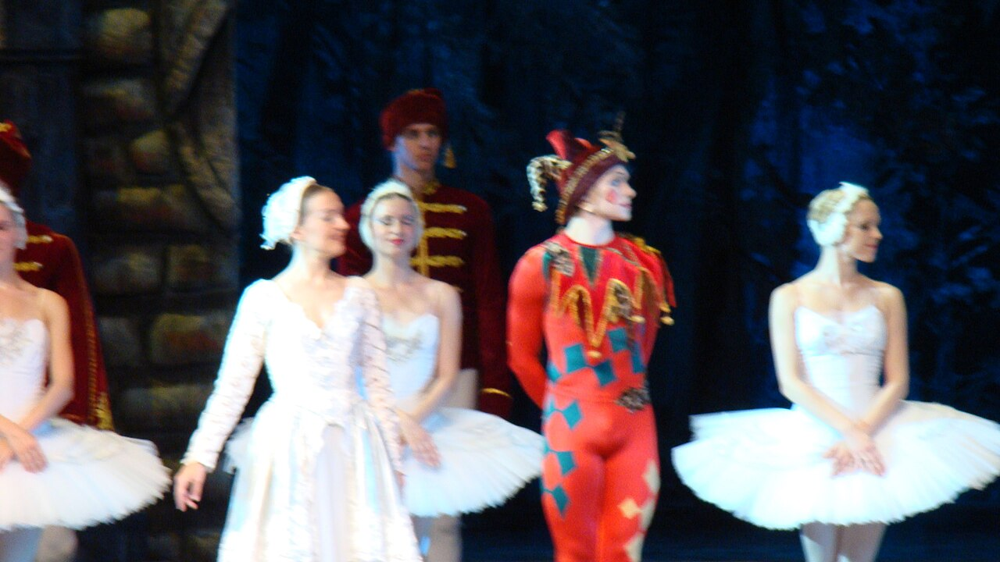
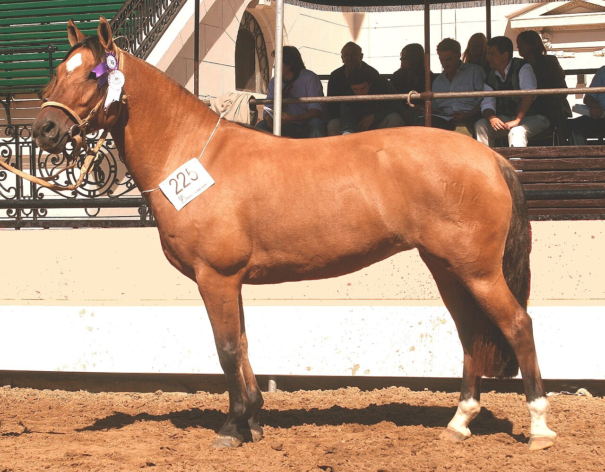
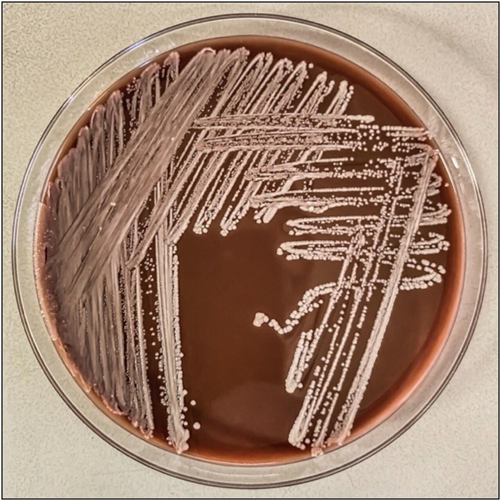
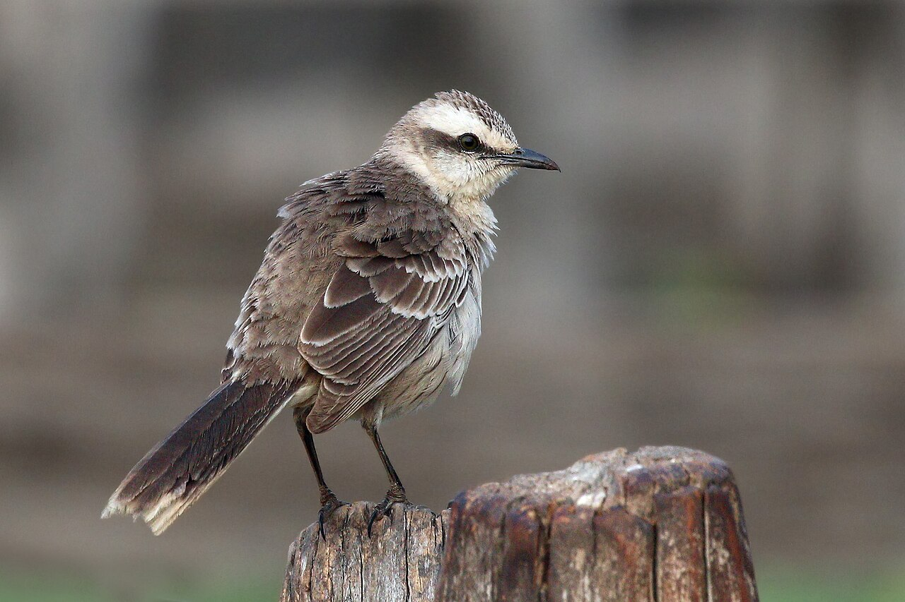
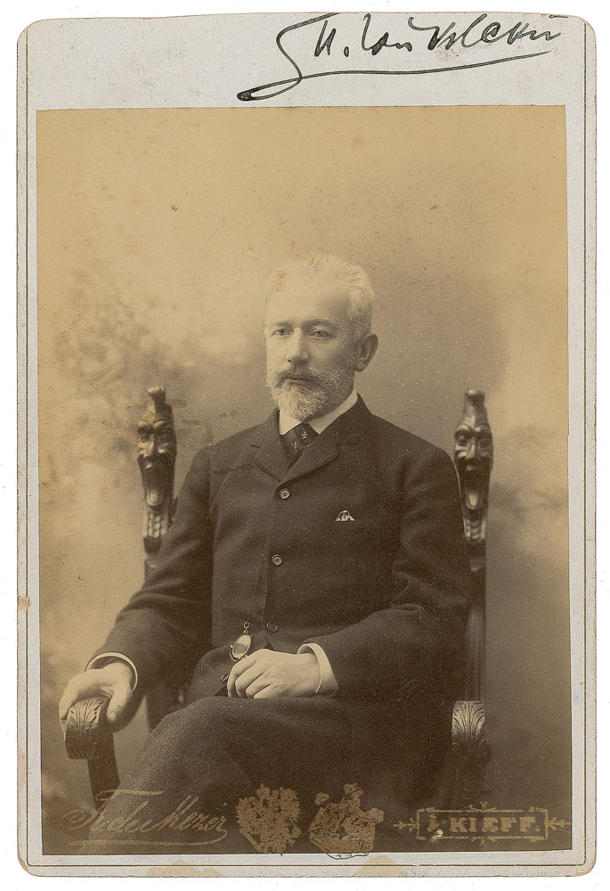
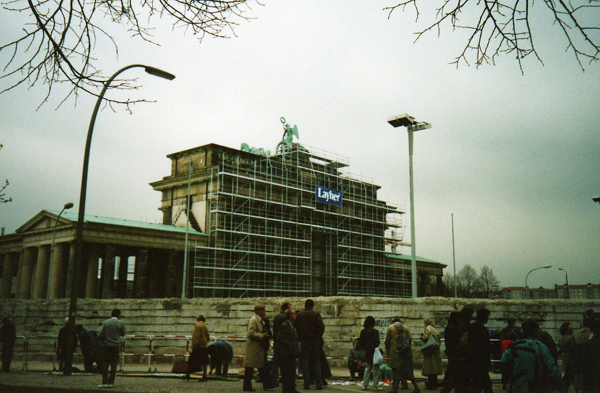
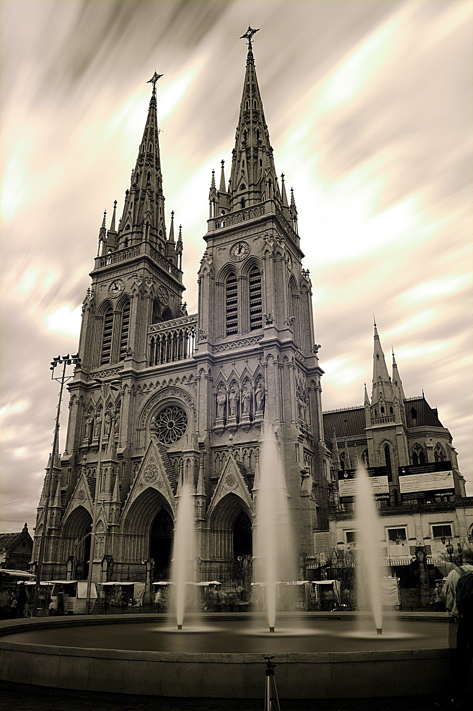
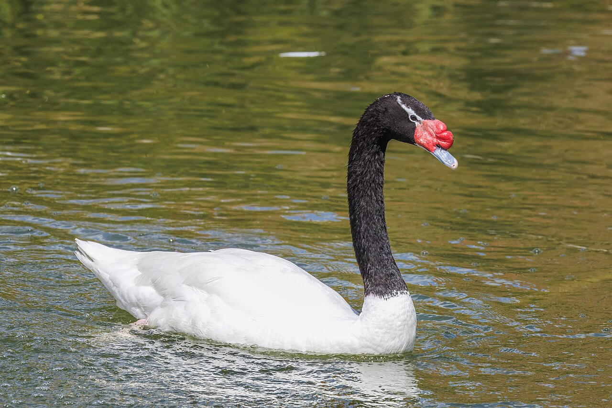

diario de la mañana — el mundo, tu ciudad y lo que te asombra
Nº 3Sábado 3 de octubre de 2026Buenos Aires≈ 35 min de lectura

Tapa:El lago de los cisnes, el ballet con el que arranca esta sección. Foto: EgorovaSvetlana · CC BY-SA 4.0 · Wikimedia CommonsSábado de ballet
Buen día. Sábado de estudio y de lluvia: ideal para leer esto de a ratos. Hoy estrena la sección de ballet, y empieza por tu favorito: El lago de los cisnes, con video del cisne negro. La ciencia trae un paper de Cell que identifica la célula madre de tendones y ligamentos, y como llueve, te cuento por qué la lluvia tiene olor (spoiler: Streptomyces).
12° / 16°Tormentas aisladas a la mañana y lluvia débil a la tarde, con 70 a 100 % de probabilidad. Viento del nordeste de 13 a 22 km/h. Paraguas y algo impermeable.
Brasil elige presidente mañana y Letonia vota hoy, con Rusia del otro lado de la frontera
BrasilLula contra Flávio Bolsonaro, con balotaje probable
El Palacio del Planalto, sede del gobierno en Brasilia. Foto: Jonas Richter · CC BY-SA 4.0 · Wikimedia Commons
Mañana es la primera vuelta. Datafolha (28/9) da a Lula 40 % y a Flávio Bolsonaro, hijo del expresidente, 36 %; Quaest, 39 % contra 34 %. Para ganar en primera vuelta hace falta más de la mitad de los votos válidos, así que todo indica balotaje el 25 de octubre. Ahí Datafolha los muestra en empate técnico: 47 % a 45 %.
Por qué importa: Brasil es el principal socio comercial de la Argentina y el motor del Mercosur. Del resultado depende la relación con Milei, que tiene mucha más afinidad con los Bolsonaro.
LetoniaElecciones con la seguridad europea en juego
Letonia elige hoy los 100 escaños del Saeima, su parlamento, después de que en primavera cayera la coalición de Evika Siliņa. Las encuestas ponen primera a la conservadora Lista Unida, de Andris Kulbergs (22,7 %), seguida por una nueva coalición socialconservadora, Poder Soberano/Nuevos Letones. El sistema es proporcional por listas abiertas, con método Sainte-Laguë y un umbral del 5 %. La seguimos en inglés en el English corner.
Estrecho de OrmuzAtacan petroleros en el corazón de la guerra con Irán
La agencia marítima británica UKMTO informó que dos petroleros fueron alcanzados por «proyectiles no identificados» cerca del estrecho de Ormuz: uno tuvo un incendio y un apagón a bordo, sin heridos. Por ese paso circulaba una quinta parte del petróleo y del GNL del mundo antes de que Estados Unidos e Israel atacaran Irán, a fines de febrero. Desde entonces Teherán bloquea buques que considera no autorizados.
Por qué importa: cada ataque en Ormuz se siente en el precio del petróleo y, de ahí, en la nafta, el transporte y la inflación de todo el mundo, incluida la Argentina.
SuizaUn «HELP» escrito en el lecho seco de un río
Después de casi cuatro meses sin agua por falta de lluvia, alguien escribió «HELP» en el fondo seco del río Doubs y del lago de Brenets, en la frontera con Francia. Una imagen más de las sequías que golpean a Europa.
GazaOtro ataque en la ciudad
Un bombardeo israelí contra un edificio de departamentos en el barrio de Remal, en la ciudad de Gaza, mató al menos a cinco personas.
Argentina y Buenos Aires no vivir adentro de un táper
Un millón camino a Luján y la Iglesia que se prepara para el Papa
La 52ª Peregrinación Juvenil a Luján
Hoy y mañana se espera a un millón de personas en los 60 km entre el santuario de San Cayetano, en Liniers, y la Basílica de Luján. Este año tiene un tono especial: el papa León XIV llega al país el 8 de noviembre y se queda hasta el 11, con paradas en Buenos Aires, Córdoba y Luján. Es la primera visita papal en casi cuatro décadas. El arzobispo porteño Jorge García Cuerva advirtió que el Papa «encontrará una Argentina herida y dividida» por la crisis social.
Qué piensan los empresarios en el Coloquio de IDEA
Según un relevamiento hecho en el Coloquio, siete de cada diez empresarios creen que el dólar debería superar los $1.800, y el 81 % prevé que Milei sea reelecto en 2027. En paralelo, un informe indica que el 35 % de los jubilados deja de lado atención médica por el ajuste.
La Selección, otra vez en cancha
Después de golear a Bolivia en Córdoba, Argentina juega hoy a las 21 contra Burkina Faso en el Monumental (TyC Sports y Telefe). Es el segundo de tres amistosos de la fecha FIFA.
Para un sábado de lluvia
Expo Alfajores Argentinos, hoy y mañana de 13 a 20 en La Rural: bajo techo.
Combis gratis por museos de diseño (Bellas Artes, Moderno, Proa, Casa FOA, Larivière), hoy de 14 a 19. Con lluvia, igual van.
Mafalda Inmersiva en el Recoleta: sábados de 11 a 21.
Ciencia nivel colega
Identifican la célula madre de tendones y ligamentos, y su papel en la estenosis lumbar
Los tendones y ligamentos tienen baja celularidad, cicatrizan mal y pierden función con la edad, y nunca se había definido con precisión la célula madre que los mantiene. El grupo de Matthew B. Greenblatt (Weill Cornell Medicine y Hospital for Special Surgery, Nueva York) la describe en Cell: la TLSC (tendon/ligament stem cell), con el inmunofenotipo Lin⁻ Thy1.2⁻ Sca-1⁻ CD73⁺ CD140α⁻.
Qué mostraron
Criterios de célula madre: la población aislada por citometría muestra autorrenovación y da origen a todos los demás linajes de tenocitos.
Jerarquía in vivo: por rastreo de linaje basado en variantes somáticas (usando mutaciones adquiridas naturalmente como códigos de barras, en lugar de un reportero transgénico), la TLSC queda en el vértice de la jerarquía de diferenciación.
Ratón y humano: la población se identifica en las dos especies.
Patología: en un modelo de estenosis lumbar (el engrosamiento de ligamentos que comprime el canal raquídeo), las TLSC sufren una reprogramación intrínseca, dependiente de señalización por calcio, que aumenta su producción de tenocitos. Es una diferenciación desregulada.
Farmacología: reducir la señalización por calcio frenó ese crecimiento anormal en ratones. Los autores mencionan una clase de fármacos que ya se usa para la hipertensión.
Lectura crítica
La intervención funcionó en ratones. La estenosis lumbar humana es multifactorial (hipertrofia del ligamento amarillo, artrosis facetaria, discopatía), así que habrá que ver cuánto pesa este componente.
La nota de prensa habla de antihipertensivos, y por el mecanismo la hipótesis natural son los bloqueantes de canales de calcio. Conviene verificar en el paper qué compuesto usaron, con qué dosis y por qué vía.
El rastreo por variantes somáticas evita los artefactos de los reporteros Cre (expresión ectópica, recombinación incompleta), pero tiene menor resolución temporal.
Lo que abre: es una población definida y aislable, lo que habilita ingeniería de tejidos y terapia celular para roturas de tendón y ligamento cruzado.
Greenblatt MB y col. «Identification of the tendon/ligament stem cell in mice and humans». Cell (2026). cell.com · Weill Cornell
Además: p11, un amplificador de señales para muchos receptores
Investigadores del Karolinska Institutet (Saarinen y col., Science Advances) muestran que la pequeña proteína p11 (S100A10), conocida por su rol en la señalización serotoninérgica y en la depresión, interactúa con numerosos receptores que son blanco de fármacos de uso común. Su función sería amplificar la señal desde la membrana. Si se confirma, p11 podría modular la eficacia de tratamientos para dolor, inflamación y depresión.
Biotec en el mundo real · Inmunova y el síndrome urémico hemolítico

Los anticuerpos equinos siguen siendo una plataforma clave para antitoxinas. Foto: Luciodec · CC BY 3.0 · Wikimedia Commons
La Argentina tiene la incidencia de síndrome urémico hemolítico (SUH) más alta del mundo: es la primera causa de insuficiencia renal aguda en la infancia, provocada por E. coli productor de toxina Shiga (STEC, como O157:H7). Inmunova, una empresa nacida del trabajo de Fernando Goldbaum en la Fundación Instituto Leloir, desarrolla INM004: fragmentos F(ab')₂ equinos que neutralizan la toxina Shiga circulante antes de que dañe el endotelio renal.
La plataforma: se hiperinmunizan caballos, se purifican las IgG del plasma y se digieren con pepsina para eliminar el Fc. Así se reduce la reactogenicidad (menos activación del complemento, menos enfermedad del suero) y se mejora la biodistribución.
El inmunógeno: la experiencia del grupo de Goldbaum con la lumazina sintasa de Brucella (BLS), un andamiaje decamérico muy inmunogénico, permite presentar antígenos de forma multivalente.
La ventana terapéutica es el desafío: hay que tratar en la fase de diarrea, antes del SUH, lo que obliga a contar con un diagnóstico rápido de STEC. Por eso el desarrollo clínico va de la mano del diagnóstico.
Antecedente: en 2020, la misma plataforma dio el suero equino anti-SARS-CoV-2 (con ANLIS-Malbrán), aprobado por ANMAT en emergencia.
Ciencia en la vida cotidiana · Por qué la lluvia tiene olor

Colonias de Streptomyces, los responsables del olor a tierra mojada. Foto: Carlos Espinoza, Pedro Morales, Brenda Perez, Alvaro Huac… · CC BY 4.0 · Wikimedia Commons
El olor a tierra mojada es, en buena parte, geosmina (un sesquiterpenoide bicíclico), producida por actinobacterias del suelo como Streptomyces y por cianobacterias. La sintetiza una geosmina sintasa bifuncional a partir del farnesil difosfato. Nuestra nariz la detecta en concentraciones del orden de nanogramos por litro, un umbral bajísimo.
¿Cómo llega al aire? Las gotas que caen sobre suelo poroso atrapan burbujas que suben y estallan, y liberan aerosoles con geosmina, aceites vegetales (el «petricor» original) e incluso bacterias. Lo filmaron con cámaras de alta velocidad en el MIT en 2015. Y una hipótesis evolutiva elegante: la geosmina atrae a los colémbolos, que comen Streptomyces y dispersan sus esporas.
Para tu formación:Streptomyces es además el género que produce dos tercios de los antibióticos naturales conocidos, de la estreptomicina a la tetraciclina. El olor a lluvia es el olor de la fábrica de antibióticos más grande del planeta.
Mirá a tu alrededor flor y ave de la semana
Las glicinas cuelgan de los balcones y la calandria imita a todos
Racimos de glicina. Foto: Emőke Dénes · CC BY-SA 4.0 · Wikimedia Commons

La calandria grande. Foto: Charles J. Sharp · CC BY-SA 4.0 · Wikimedia Commons
La flor: glicina
Nombre científico
Wisteria sinensis (Fabáceas, como el ceibo de ayer)
De dónde es
China. Es exótica, pero está en patios, pérgolas y balcones de toda la ciudad.
Cuándo mirarla
Ahora: florece a principios de la primavera, a veces antes de echar hojas
Cómo reconocerla
Enredadera leñosa con racimos colgantes lilas de 20 a 30 cm y un perfume dulce. Las vainas son aterciopeladas.
Ojo
Semillas y vainas son tóxicas (contienen lectinas y glucósidos).
El ave: calandria grande
Nombre científico
Mimus saturninus (familia Mímidos)
Tamaño
Unos 25 cm, cola larga
Cómo reconocerla
Gris parduzca, con una ceja blanca marcada y la cola con puntas blancas que abre al aterrizar.
Su talento
Imita el canto de otras aves (de ahí Mimus) y arma frases largas y variadas desde lo alto de un árbol o una antena.
Tu misión de hoy
dibujo · un racimo de glicina
Receta de estación día de lluvia · con su química
Tortas fritas, la receta oficial de los días de lluvia
Una hora en total, con descanso de la masa incluido. Para el mate de la tarde.
Grasa o aceite para freír; azúcar para espolvorear
Pasos
Mezclá la harina con la sal, sumá la grasa derretida y el agua de a poco.
Amasá 5 minutos, solo hasta que esté lisa. Tapala y dejala descansar 30 minutos.
Estirá a medio centímetro, cortá círculos y hacé un agujerito en el centro de cada uno.
Freí en grasa a unos 170–180 °C, 1 a 2 minutos por lado, hasta que estén doradas.
Escurrí sobre papel y pasalas por azúcar.
La química de la receta
El descanso: al hidratar la harina, la gliadina y la glutenina forman la red de gluten (puentes disulfuro, interacciones hidrofóbicas). Amasar la alinea y la tensa; el reposo deja que se relaje, y por eso la masa se estira sin encogerse.
La fritura: a 170–180 °C, el agua de la superficie se evapora de golpe. Ese flujo de vapor hacia afuera limita la entrada de grasa mientras fríe, y la superficie deshidratada se dora por Maillard. Buena parte del aceite se absorbe al sacarlas, cuando el vapor condensa y genera succión: escurrirlas enseguida sí sirve. Si la grasa está fría, se empapan.
El agujero: reduce el espesor efectivo en el centro, la zona que más tarda en cocinarse, para que la cocción sea pareja en el mismo tiempo.
Un clásico en cinco minutos literatura universal
Hans Christian Andersen, «Los cisnes salvajes» (1838)
Para preparar el ballet: un cuento de hermanos convertidos en cisnes. Traducción nuestra del danés, abreviada.
Hans Christian Andersen. Foto: Thora Hallager · Public domain · Wikimedia Commons
Muy lejos de aquí, allá adonde vuelan las golondrinas cuando aquí es invierno, vivía un rey que tenía once hijos y una hija, Elisa. Los once hermanos iban a la escuela con una estrella en el pecho y una espada al costado; escribían con lápices de diamante en pizarras de oro.
Pero el rey se casó con una reina malvada. A Elisa la mandó al campo, a vivir con unos campesinos, y de los pobres príncipes le dijo tantas mentiras al rey que él ya no quiso saber nada de ellos.
«Vuelen por el mundo y arréglense solos», dijo la reina. «Vuelen como grandes pájaros sin voz». Pero no pudo hacer todo el mal que quería: se convirtieron en once hermosos cisnes salvajes. Con un grito extraño salieron volando por las ventanas del palacio, sobre el parque y el bosque.
«Vuelen como grandes pájaros sin voz».
Para entrar al texto
El final: para romper el hechizo, Elisa tiene que tejer once camisas de ortiga sin decir una sola palabra, aunque la acusen de bruja. El silencio como sacrificio es el corazón del cuento.
La doncella cisne es un mito que aparece en el folclore de media Europa. De esa misma familia de leyendas sale el argumento de El lago de los cisnes: una princesa hechizada que es cisne de día.
Andersen, hijo de un zapatero pobre, quiso ser bailarín y cantante en el Teatro Real de Copenhague antes de ser escritor. El ballet le quedó cerca toda la vida.
La palabra del día de dónde viene
ballet sustantivo masculino
latín tardío ballare (bailar) → italiano ballo → balletto (diminutivo) → francés ballet → castellano ballet · inglés ballet
Un balletto era un «bailecito»: una pieza de danza en las cortes italianas del Renacimiento. La palabra pasó al francés cuando la danza cortesana se instaló en Francia, sobre todo con Luis XIV, que bailaba él mismo y fundó en 1661 la Académie Royale de Danse. Por eso el vocabulario del ballet es francés en todo el mundo: plié, pas de deux, fouetté.
Del mismo origen vienen baile y balada, que al principio era una canción para bailar. En francés se pronuncia [ba-LÉ]; en inglés, [BA-lei] o [ba-LÉI].
Le français du matin desde cero · semana 1: presentarse
Enchantée !
Presentar a alguien y responder. Escuchalo dos veces y después leelo en voz alta.
— Bonjour ! Voici mon amie Sofía.
— Enchantée, Sofía ! Je suis Lula.
— Enchantée ! Tu es d'où ?
— Je suis de Buenos Aires.
Voici…
Este es / Esta es… [vua-SÍ]
mon amie
mi amiga [mon a-MÍ]
Enchantée !
¡Encantada! [an-shan-TÉ]
Je suis…
Soy… [yə SUÍ]
Tu es d'où ?
¿De dónde sos? [tü e DU]
Je suis de…
Soy de… [yə suí də]
Un truco
Enchantée lleva una «e» extra porque lo dice una mujer; un hombre escribe enchanté. Suenan igual. Lo mismo pasa con amie (amiga) y ami (amigo).
À toi: completá.
English corner level C1 · world news
Latvia votes on NATO's front line
Riga, capital of Latvia, on the Daugava river. Foto: Matti Blume · CC BY-SA 4.0 · Wikimedia Commons
Latvians go to the polls today to elect all 100 members of the Saeima, in a contest that will be watched as closely in Brussels as it is in Moscow. The previous coalition, led by Evika Siliņa, unravelled this spring, leaving the country without a stable majority at a moment when its 450-kilometre border with Russia and Belarus has rarely felt more exposed.
Polls put the conservative United List, headed by Andris Kulbergs, in front with around 23 per cent — hardly a commanding lead. Hot on its heels is a newly forged social-conservative alliance, Sovereign Power/New Latvians, which has tapped into discontent over living costs and, critics say, flirts with a softer line on Moscow and on NATO commitments.
The arithmetic will be unforgiving. Seats are allocated by the Sainte-Laguë method across five constituencies, with a five per cent threshold that has a habit of knocking out smaller parties and reshuffling the deck. Whoever ends up forming a government will inherit a sizeable Russian-speaking minority, an economy still feeling the chill of sanctions, and allies who expect Riga to keep spending heavily on defence. In a region where elections are increasingly read as referendums on the West, Latvia's choice will carry well beyond its borders.
to go to the polls — ir a votar
to unravel — deshacerse, desmoronarse
a commanding lead — una ventaja holgada
hot on its heels — pisándole los talones
to tap into — aprovechar, canalizar
to flirt with — coquetear con (una idea)
to reshuffle the deck — barajar de nuevo
to feel the chill of — sentir el efecto de
Your turn (answer in English):
Sábado de ballet la sección nueva
El lago de los cisnes: el fracaso que se volvió el ballet más famoso del mundo

Piotr Ilich Chaikovski. Foto: autor desconocido · Public domain · Wikimedia Commons
Chaikovski escribió la música en 1875–76 por encargo del Teatro Bolshói de Moscú. El estreno, en 1877, con coreografía de Julius Reisinger, fue un fracaso: decorados pobres, una orquesta que no entendía una partitura tan sinfónica y una coreografía olvidable. Chaikovski murió en 1893 sin ver el éxito de su obra.
La resurrección llegó en 1895, en el Teatro Mariinski de San Petersburgo, con una nueva coreografía de Marius Petipa (actos 1 y 3, los del palacio) y Lev Ivanov (actos 2 y 4, los del lago). Casi todas las versiones que se bailan hoy, incluida la del Colón, salen de ahí.
La historia en cuatro líneas
El príncipe Sigfrido, que tiene que elegir esposa, se enamora en un lago de Odette, una princesa que el brujo Rothbart convirtió en cisne: solo es mujer de noche. Le jura amor eterno, y eso rompería el hechizo. En el baile del palacio aparece Odile, el cisne negro, hija de Rothbart, idéntica a Odette. Sigfrido se confunde y le jura amor a ella. El final, trágico o feliz, depende de la versión.
El truco genial: una sola bailarina
Odette y Odile las baila la misma bailarina. Odette es frágil, lírica, con brazos que ondulan como alas (el port de bras «de cisne»). Odile es brillante, seductora y fría, con una técnica de ataque. Es uno de los papeles más exigentes del repertorio, porque pide dos personalidades opuestas en una misma noche.
Qué mirar: en la coda, Odile gira 32 fouettés sobre una sola pierna, en el mismo lugar, «látigo» tras «látigo» con la pierna que impulsa. Los introdujo la italiana Pierina Legnani, la primera Odette/Odile de 1895, y desde entonces son la prueba de fuego del papel. Contá los giros y fijate cómo la bailarina «marca» un punto fijo con la mirada para no marearse.
Y si querés ver a la argentina Marianela Núñez, primera bailarina del Royal Ballet, en el pas de deux completo con Vadim Muntagirov: mirá esta versión.
En Buenos Aires
El Ballet Estable del Teatro Colón, dirigido por Julio Bocca, abrió su temporada 2026 con El lago de los cisnes en la versión de Raúl Candal sobre Petipa. Este año presenta ocho títulos, entre ellos El cascanueces, dos con Marianela Núñez como protagonista y el estreno mundial de Borges, encargado al coreógrafo Goyo Montero. Fijate fechas y entradas en teatrocolon.org.ar.
Hoy en la historia · un lugar en el mapa
3 de octubre de 1990: Alemania vuelve a ser una

La Puerta de Brandeburgo, símbolo de la división y de la reunificación. Foto: DAVID HOLT from London, England · CC BY-SA 2.0 · Wikimedia Commons
Menos de un año después de la caída del Muro de Berlín (9 de noviembre de 1989), la República Democrática Alemana se disolvió y sus estados se incorporaron a la República Federal. Terminaban 41 años de división. Hoy es el feriado nacional alemán, el Día de la Unidad. La reunificación fue también un enorme experimento económico: Alemania del Este tuvo que pasar en meses de una economía planificada a una de mercado.
El lugar: Luján

La Basílica de Nuestra Señora de Luján. Foto: Luis Argerich from Buenos Aires, Argentina · CC BY 2.0 · Wikimedia Commons
Dónde
A unos 68 km al oeste de la Ciudad de Buenos Aires, sobre el río Luján
La historia
Según la tradición, en 1630 una carreta que llevaba una imagen de la Virgen hacia Santiago del Estero no pudo seguir viaje a orillas del río. Ahí se levantó la primera capilla.
La basílica
Neogótica, construida entre 1887 y 1935, con torres de más de 100 metros.
Además
El Complejo Museográfico Enrique Udaondo, uno de los más importantes del país, con el Cabildo de Luján.
Conexión
Ahí llega hoy la peregrinación juvenil, y en noviembre irá el Papa.
Lo que me asombra hoy
Los cisnes negros existen (y en Argentina tenemos uno de cuello negro)

Cisne de cuello negro (Cygnus melancoryphus). Foto: Charles J. Sharp · CC BY-SA 4.0 · Wikimedia Commons
Durante siglos, en Europa, «cisne negro» fue sinónimo de algo imposible: el poeta latino Juvenal hablaba de un ave tan rara como un cisne negro. Hasta que en 1697 el explorador neerlandés Willem de Vlamingh los vio en Australia: Cygnus atratus, totalmente negros, con pico rojo. De ahí viene la metáfora moderna del «cisne negro» como evento improbable que cambia todo.
En la Argentina vive el cisne de cuello negro (Cygnus melancoryphus): cuerpo blanco, cuello y cabeza negros y una carúncula roja sobre el pico. Lo podés ver en lagunas bonaerenses y patagónicas. Odette y Odile, en un solo pájaro.
Pasatiempo sudoku · nivel difícil (es sábado)
Quince minutos para la cabeza
Completá cada fila, cada columna y cada caja de 3×3 con los números del 1 al 9, sin repetir. Tiene una sola solución.
356673791937251397382678436
Cuaderno para repasar lo de hoy
Repaso y quiz de la mañana
Repaso de idiomas · de esta semana
Quiz
¿Qué marcador de superficie es positivo en la TLSC?
¿De qué depende la reprogramación de las TLSC en la estenosis lumbar?
¿Por qué se usan fragmentos F(ab')₂ en lugar de IgG entera?
¿Qué molécula da el olor a tierra mojada?
¿Quién coreografió los actos del lago en 1895?
¿Cuántos fouettés gira Odile en la coda?
¿Qué hay que tejer Elisa para salvar a sus hermanos?
¿Qué umbral electoral tiene Letonia?
«Enchantée» con «e» final lo escribe…
Escritura: tres líneas para hoy
Soluciones tocá para destapardadas vuelta, para no espiar
Quiz: CD73 · señalización por calcio · sin el Fc son menos reactogénicos · la geosmina · Lev Ivanov · 32 · once camisas de ortiga · 5 % · una mujer.
Repaso: merci · à demain ! · il fait frais · exceso de confianza · escorrentía · algo que recuerda a.
Français: Voici mon amie Clara. · Je suis de Buenos Aires.
English 1: parties below 5 % get no seats at all, however close they come.
English 3 (ejemplo): My thesis deadline is hot on the heels of my last exam.


,_Pantanal,_Brazil.jpg){kind=link}